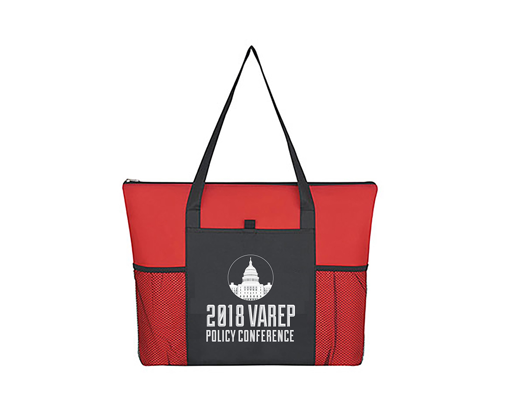

Veterans Association of Real Estate Professionals
2018 | print + web designs
VAREP
Materials / 2018 National Policy
Conference / Stop, Drop & Push
Veterans Association of Real Estate Professionals (VAREP), is a non-profit 501(c)(3) and HUD-approved housing counseling organization dedicated to increasing sustainable homeownership, financial-literacy education, VA loan awareness, and economic opportunity for the active-military and veteran communities.
Working as a Junior Grpahic Designer for this organization, I made various marketing materials such as brochures, monthly newsletter layouts and flyers. Some special projects included
contributing to the creation of materials for the 2018 National Policy Conference as well as graphics for the Stop, Drop & Push movement. Click the links to learn more about each.
Designing graphics for this organization was interesting, creating material that would appeal to both Real Estate Professionals as well as U.S. Veterans. I learned a great deal about
both audiences in the process and I enjoyed designing for a great cause.
Above: RT "Roger That" Monthly Newsletter Cover for April Edition
Below: Spreads from the April Edition
Member Trifold
Consumer Trifold
The 2018 National Policy Conference takes place in Washington, D.C. and is filled with educational sessions and town halls to educate attendees on important housing policy, lending initiatives, and economic development affecting the military and veteran communities.
VAREP members have the opportunity to meet with members of Congress to advocate VAREP’s Policy Positions on issues that affect military and veteran homeownership.
For this conference I contributed my hand in the design process of creating layouts and graphics for the event program, as well as VAREP's Position Statement, which states what issues VAREP wanted to address congress about that year.
I also designed name badges, mocked up freebies like totebags and desinged conference coins. These coins refer to a story dating back to WWII and were passed out to Veterans at the event; I
designed one for the policy conference, as well one for the 50th anniversary of Equal Housing Opportunity.

Position Statement for the Policy Conference
Final designs for coins to be handed out to attendees of the Conference.
Conference Attendee Badge
Tote Bag handed out to each attendee of the Conference.
The Stop, Drop & Push campaign's mission "is to create awareness of the 22 veteran lives lost each day due to suicide, educate the public about veteran reintegration issues and empower our Heroes to seek treatment, rediscover purpose and lead productive lives."
In house we created flyers and promoted events that raised money for this cause.
On behalf of this movement I created a series of social media images to get the word out about the events and opportunities for people to donate to this cause. Their branding has changed since then, but here
is the series of facebook images from 2018.